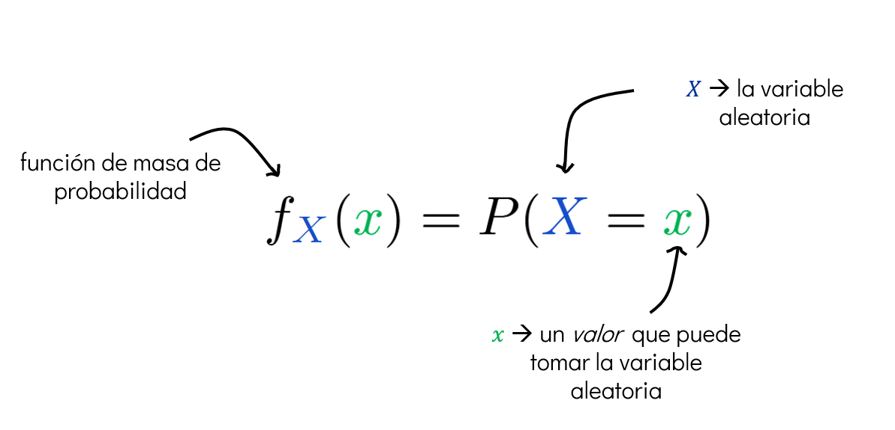
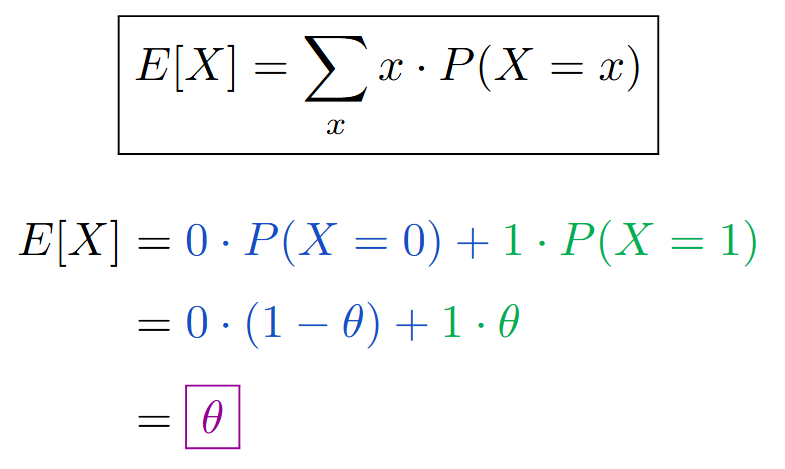
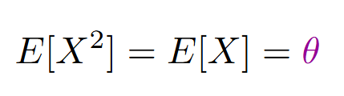

Sesión 3 A#
1. Repaso de probabilidad (parte 2A)#
1.1. Variables aleatorias#
Las variables aleatorias son funciones que asignan un valor numérico a cada resultado de un experimento aleatorio. Se clasifican en dos tipos:
➡️ Variables aleatorias discretas
Variables aleatorias continuas
Variables aleatorias discretas#
Definición
Sea \(\Omega\) un espacio muestral discreto, es decir, un conjunto finito o numerable de posibles resultados de un experimento aleatorio.
Una variable aleatoria discreta es una función que asigna un número real a cada elemento de \(\Omega\):
Es decir, toma un resultado del experimento aleatorio y lo traduce a un número real que nos interesa analizar o interpretar.
¿por qué usamos variables aleatorias?#
Cuando trabajamos con variables aleatorias, no nos enfocamos directamente en los resultados del experimento (como obtener un 3 y un 5 al lanzar dos datos), sino en alguna cantidad derivada de esos resultados: una suma, una ganacia, un conteo, etc.
Esto nos permite:
Modelar situaciones de forma numérica.
Usar herramientas matemáticas para analizar fenómenos aleatorios.
Calcular cantidades como la probabilidad de éxito, el valor esperado o la variabilidad de un resultado.
Ejemplo
Supongamos que lanzamos dos dados. El espacio muestral es:
Este conjunto tiene 36 posibles pares ordenados y, si los dados son justos, cada uno tiene la misma probabilidad:
Ahora, supongamos el siguiente juego:
Ganas $500 si la suma de los datos es 7.
Pierdes $100 en cualquier otro caso.
Podemos definir una variable aleatoria discreta \(X(i, j)\) que represente la ganacia del juego:
Interpretación
Esta variable aleatoria convierte los resultados del experimento (el lanzamiento de los dados) en una cantidad que nos interesa: la ganancia o pérdida en el juego.
Así, en lugar de analizar directamente los pares \((i, j)\), analizamos el comportamiento de \(X\), que ya resume lo que queremos estudiar.
1.1.1. Función de masa de probabilidad (PMF)#
Una vez que tenemos una variable aleatoria discreta \(X\), queremos saber con qué probabilidad toma cada uno de sus posibles valores.
Para eso usamos la función de masa de probabilidad o PMF (Probability Mass Function).
¿qué hace la PMF?#
La PMF asigna una probabilidad a cada valor posible que puede tomar la variable aleatoria.
En otras palabras:
La PMF mapea cada valor real que puede tomar \(X\) al número entre 0 y 1 que representa su probabilidad.

Consideramos el tiro de un solo dado. El dado está cargado, de modo que solo salen los valores \(1\), \(5\) y \(6\), y de modo que la función de probabilidad sea:
from scipy import stats
from matplotlib import pyplot as plt
import numpy as np
# definir listas de valores de X y probabilidades
xk = [1,5,6]
pk= [0.3, 0.3, 0.4]
# se define una variable aleatoria discreta
X = stats.rv_discrete(name='X', values=(xk, pk))
# Grafico: PMF
x = np.arange(1, 7)
y = X.pmf(x)
plt.plot(x, y, 'bo', ms=8, label='PMF')
plt.vlines(x, 0, y, colors='b', lw=5, alpha=0.5)
plt.title('Función de masa de probabilidad (PMF)')
plt.xlabel('x')
plt.ylabel('P(X=x)')
plt.legend()
plt.grid()
plt.show()

1.1.2. Función de distribución acumulada (CDF)#
La función de distribución acumulada —conocida como CDF (Cumulative Distribution Function)— es una forma alternativa de describir una variable aleatoria discreta \(X\).
¿qué hace la CDF?#
La CDF asigna a cada valor \(x\) la probabilidad de que la variable aleatoria \(X\) tome un valor menor o igual a \(x\).

Propiedades de la CDF
\(F(x)\) es monótona no decreciente: nunca baja.
\(0 \leq F(x) \leq 1\).
\(\lim_{x \to \infty} F(x) = 1\).
\(\lim_{x \to -\infty} F(x) = 0\).
Como tabla, siguiendo el ejemplo de los dados:
x |
1 |
2 |
3 |
4 |
5 |
6 |
|---|---|---|---|---|---|---|
p(X=x) |
0.3 |
0 |
0 |
0 |
0.3 |
0.4 |
F(x) |
0.3 |
0.3 |
0.3 |
0.3 |
0.6 |
1 |
# Grafico: CDF
x= range(-10, 15)
y= X.cdf(x)
plt.plot(x, y, 'bo', ms=8, label='CDF')
plt.step(x, y, where='post', label='CDF')
plt.xlabel('x')
plt.ylabel('P(X≤x)')
plt.title('Función de distribución acumulada (CDF)')
plt.legend()
plt.grid()

OJO
Es fácil notar que:
\((0 \leq p(a) \leq 1)\)
\((x)\) puede ser cualquier número. Si \((x)\) es un valor que \((X)\) nunca toma, entonces \((p(x) = 0)\).
🔸 La primera afirmación aplica tanto para la PMF como para la CDF: Ambas funciones siempre devuelven valores entre 0 y 1.
🔸 La segunda afirmación aplica solo para la PMF: La CDF \((F(x) = \mathbb{P}(X \leq x))\) puede ser mayor que 0 incluso si \((X)\) nunca toma el valor exacto \((x)\), porque acumula las probabilidades de los valores menores o iguales a \((x)\).
Recapitulando, tenemos:
Concepto |
Palabra clave |
¿Qué representa? |
|---|---|---|
Espacio muestral |
“Todo lo posible y medible” |
Todas las salidas del experimento |
Función de probabilidad |
“Peso” |
Cuán probable es cada resultado |
Variable aleatoria |
“Traducción” |
Asocia un número a cada resultado del experimento |
Distribución |
“Comportamiento” |
Cómo se reparten los valores que genera \((X)\) |
1.2. Distribuciones de probabilidad discretas#
1.2.1. Distribución de Bernoulli#
Qué modela:
Un solo experimento con dos posibles resultados: éxito (1) o fracaso (0).
Ejemplo:
Tirar una moneda una vez:
Cara = 1 (éxito)
Cruz = 0 (fracaso)
Parámetros: \(\theta \in [0, 1]\) es la probabilidad de éxito.
Se denota como:
La pmf de una distribución Bernoulli es:
donde:
\(p(1) = \theta\) es la probabilidad de éxito.
\(p(0) = 1 - \theta\) es la probabilidad de fracaso.
# Variable aleatoria de Bernoulli
theta = 0.3
X = stats.bernoulli(p=theta)
# Grafico: PMF
x = [0,1]
y = X.pmf(x)
plt.plot(x, y, 'bo', ms=8, label='PMF')
plt.vlines(x, 0, y, colors='b', lw=5, alpha=0.5)
plt.title('Función de masa de probabilidad (PMF) - Bernoulli')
plt.xlabel('x')
plt.ylabel('P(X=x)')
plt.legend()
plt.grid()

# Grafico: CDF
x = range(-5, 5)
y = X.cdf(x)
plt.plot(x, y, 'bo', ms=8, label='CDF')
plt.step(x, y, where='post', label='CDF')
plt.xlabel('x')
plt.ylabel('P(X≤x)')
plt.title('Función de distribución acumulada (CDF) - Bernoulli')
plt.legend()
plt.grid()

1.2.2. Distribución Binomial#
Qué modela: El número total de éxitos en \(n\) experimentos independientes de Bernoulli.
Ejemplo: Tirar una moneda \(n\) veces y contar cuántas veces sale cara.
Parámetros:
\(n\): número de ensayos
\(\theta\): probabilidad de éxito en cada ensayo
Se denota como:
La pmf de una distribución binomial es:
Si hacemos \(n=1\), \(\text{Binomial}(1, \theta) = \text{Bernoulli}(\theta)\).
# Variable aleatoria binomial
theta = 0.8
X = stats.binom(n=10, p=theta)
# Grafico: PMF
x = range(0, 11)
y = X.pmf(x)
plt.plot(x, y, 'bo', ms=8, label='PMF')
plt.vlines(x, 0, y, colors='b', lw=5, alpha=0.5)
plt.title('Función de masa de probabilidad (PMF) - Binomial')
plt.xlabel('x')
plt.ylabel('P(X=x)')
plt.legend()
plt.grid()

# Grafico: CDF
x = range(-5, 20)
y = X.cdf(x)
plt.plot(x, y, 'bo', ms=8, label='CDF')
plt.step(x, y, where='post', label='CDF')
plt.xlabel('x')
plt.ylabel('P(X≤x)')
plt.title('Función de distribución acumulada (CDF) - Binomial')
plt.legend()
plt.grid()

1.2.3 Distribución Geométrica#
Qué modela: El número de ensayos hasta obtener el primer éxito (incluyendo ese éxito).
Ejemplo: Tirar una moneda hasta que salga cara por primera vez. Si sale cara en el tercer intento, \(X=3\).
Parámetros: \(\theta\): probabilidad de éxito en cada intento.
Se denota como:
La VA \(X\) sigue una distribución geométrica con parámetro \(\theta\) si,
\(X\) toma los valores \(1, 2, 3, \dots\)
Su pmf está dada por \(p(a) = \theta (1 - \theta)^{a - 1}\).
La denotamos como \(Geom(\theta)\).
# Variables aleatorias Geométricas
theta1 = 0.3 #cada una independiente
theta2 = 0.7 #cada una independiente
X1 = stats.geom(p=theta1)
X2 = stats.geom(p=theta2)
# Grafico: PMF
x = range(0, 11)
y1 = X1.pmf(x)
y2 = X2.pmf(x)
plt.plot(x, y1, 'bo', ms=8, label='PMF, theta=0.3')
plt.vlines(x, 0, y1, colors='b', lw=5, alpha=0.5)
plt.plot(x, y2, 'ro', ms=8, label='PMF, theta=0.7')
plt.vlines(x, 0, y2, colors='r', lw=5, alpha=0.5)
plt.xlabel('Valores de X')
plt.ylabel('Probabilidad')
plt.grid()
plt.legend()
<matplotlib.legend.Legend at 0x2f0a677e5d0>

# Grafico: CDF
x = range(-5, 20)
y1 = X1.cdf(x)
y2 = X2.cdf(x)
plt.plot(x, y1, 'bo', ms=8, label='CDF, theta=0.3')
plt.step(x, y1, where="post", lw=5, alpha=0.5, color='b')
plt.plot(x, y2, 'ro', ms=8, label='CDF, theta=0.7')
plt.step(x, y2, where="post", lw=5, alpha=0.5, color='r')
plt.xlabel('Valores de X')
plt.ylabel('Función de distribución acumulada')
plt.legend()
plt.grid()

1.3. Valor esperado y varianza (discretas)#
1.3.1. Esperanza#
Una de las operaciones más importantes con probabilidades es la de encontrar promedios ponderados de funciones. El valor esperado de una función \(f(x)\) respecto a una distribución \(p(x)\), denotado por \(\mathbb{E}_p[f]\), está dado por:
Para una distribución discreta:
Este enfoque más general se expresa como:
Y si tomamos \(f(x) = x\), recuperamos la forma más común del valor esperado:
1.3.2. Varianza#
El valor esperado es una medida de tendencia central, en el sentido de que nos da un valor promedio, o “centro de gravedad” probabilístico, hacia el cual tienden los datos al repetirse el experimento muchas veces.
Sin embargo, no nos dice qué tan dispersos están los valores alrededor de ese promedio. Para eso, necesitamos una medida de variabilidad: la varianza.
La varianza de una función \(f(X)\), denotada como \(\mathrm{var}_p[f]\), se define como:
Una forma algebraicamente más sencilla y muy útil para calcular la varianza es:
Esta fórmula permite calcular la varianza a partir de dos esperanzas:
La esperanza del cuadrado de \(f(x)\)
El cuadrado de la esperanza de \(f(x)\)
1.3.3. Cálculo de esperanza y varianza de variable aleatoria Bernoulli#
Sea \(X\) una variable aleatoria que toma valores en el conjunto \(\{0, 1\}\). Se denota como:

En verde, se resalta la probabilidad \(P(X = 1) = \theta\).
En azul, se muestra que \(P(X = 0) = 1 - \theta\).
La esperanza matemática o valor esperado de \(X\) se define como:

Los términos en azul y verde ayudan a identificar qué probabilidad corresponde a cada valor posible de \(X\).
El resultado final, \(\mathbb{E}[X] = \theta\), está enmarcado en morado para destacarlo.
A) Esperanza de \(X^2\)#
Dado que los únicos valores posibles de \(X\) son 0 y 1, se cumple que \(X^2 = X\). Por lo tanto:

Esta igualdad se debe a que \(0^2 = 0\) y \(1^2 = 1\), así que no hay cambio al elevar al cuadrado.
B) Varianza de una variable Bernoulli#
La varianza se calcula con la fórmula:

Se utiliza el resultado anterior \(\mathbb{E}[X] = \theta\).
El desarrollo muestra cómo se simplifica la fórmula hasta obtener \(\theta(1 - \theta)\), que aparece resaltado al final.
Ejemplo numérico#
Ejemplo 1. Suponemos que tenemos un dado justo con cinco 3’s y un 6. ¿Cuál esperaría que fuera el promedio de 6000 tiros?
x_vals = [3, 6]
probs = [5/6, 1/6]
# X1 (crear la variable aleatoria discreta)
X1 = stats.rv_discrete(name='X1', values=(x_vals, probs))
# Calcular la esperanza (valor esperado)
E= X1.expect()
E
np.float64(3.5)
X1.rvs(size=100)
array([3, 3, 3, 3, 6, 3, 3, 3, 6, 3, 6, 3, 3, 3, 3, 3, 3, 3, 3, 3, 3, 3,
3, 6, 3, 3, 3, 3, 3, 6, 3, 6, 3, 6, 3, 6, 3, 3, 3, 3, 3, 3, 3, 3,
6, 6, 6, 3, 3, 3, 3, 6, 3, 3, 3, 6, 3, 6, 3, 3, 3, 6, 3, 3, 3, 3,
3, 3, 3, 3, 6, 6, 3, 6, 3, 3, 6, 3, 3, 3, 3, 6, 3, 6, 3, 3, 3, 3,
3, 3, 3, 3, 3, 3, 3, 3, 3, 3, 3, 6])
# Muestreamos la variable aleatoria
sample = X1.rvs(size=1000)
# Obtenemos el promedio a medida que vamos obteniendo más muestras
cumulative_average = np.cumsum(sample) / np.arange(1, 1001)
# Graficamos
plt.plot(cumulative_average)
plt.axhline(y=E, color='r', linestyle='--', label='Esperanza')
plt.title('Promedio acumulado de muestras')
plt.xlabel('Número de muestras')
plt.ylabel('Promedio')
plt.legend()
plt.grid()

# Varianza X1
X1.var()
np.float64(1.25)
Ejemplo 2. Se tiran dos dados de seis caras. Si ganas \(1000\) si la suma es 2, y pierdes \(100\) de otro modo, ¿Cuánto esperas ganar en promedio por tiro?
# X2
X2 = stats.rv_discrete(name="x2", values=((1000, -100), (1/36, 35/36)))
# Valor esperado teórico
E = X2.expect()
E
np.float64(-69.44444444444444)
# Muestreamos la variable aleatoria
samples = X2.rvs(size=10000)
# Obtenemos el promedio a medida que vamos obteniendo más muestras
cumulative_average = np.cumsum(samples) / np.arange(1, 10001)
# Graficamos
plt.plot(cumulative_average, label='Promedio acumulado')
plt.axhline(y=E, color='r', linestyle='--', label='Esperanza')
plt.title('Promedio acumulado de muestras - X2')
plt.xlabel('Número de muestras')
plt.ylabel('Promedio')
plt.legend()
plt.grid()

# Varianza X2
X2.var()
np.float64(32677.46913580247)
Si queremos una medida que nos de un sentido de dispersión en las «mismas unidades» de la variable aleatoria, podemos acudir a la desviación estándar, que se define como:
# STD de X1 y X2
print(f"STD X1: {X1.std()}")
print(f"STD X2: {X2.std()}")
STD X1: 1.118033988749895
STD X2: 180.76910448359936
Actividad de integración
Genera una función que nos permita calcular la esperanza y la varianza de una variable aleatoria discreta, dada su PMF. Utiliza esta función para calcular la esperanza y varianza de las siguientes distribuciones:
Distribución Bernoulli con \(\theta = 0.3\).
Distribución Binomial con \(n = 10\) y \(\theta = 0.3\)
Distribución Geométrica con \(\theta = 0.3\).
# Generemos una función que nos permita calcular la esperanza de una variable aleatoria discreta
# ¿cómo incorporamos la pmf?
def esperanza_varianza(soporte, pmf_func):
"""
Calcula esperanza y varianza a partir de la definición.
soporte: lista de valores posibles de X
pmf_func: función que recibe x y devuelve P(X=x)
"""
# Esperanza E[X]
E_X = sum(x * pmf_func(x) for x in soporte)
# Esperanza de X^2
E_X2 = sum((x**2) * pmf_func(x) for x in soporte)
# Varianza Var(X)
Var_X = E_X2 - E_X**2
return E_X, Var_X
# Bernoulli
theta = 0.3
soporte = [0, 1]
pmf_bernoulli = lambda x: theta if x == 1 else (1 - theta)
E, Var = esperanza_varianza(soporte, pmf_bernoulli)
print("Bernoulli → Esperanza:", E, "Varianza:", Var)
Bernoulli → Esperanza: 0.3 Varianza: 0.21
# Binomial
import math
n = 10
theta = 0.3
soporte = range(n + 1)
def pmf_binomial(k):
return math.comb(n, k) * (theta ** k) * ((1 - theta) ** (n - k))
E, Var = esperanza_varianza(soporte, pmf_binomial)
print("Binomial → Esperanza:", E, "Varianza:", Var)
Binomial → Esperanza: 2.9999999999999987 Varianza: 2.1000000000000014
# Geométrica
theta = 0.3
K = 100
soporte = range(1, K + 1)
pmf_geometrica = lambda k: ((1 - theta) ** (k - 1)) * theta
E, Var = esperanza_varianza(soporte, pmf_geometrica)
print("Geométrica (aprox) → Esperanza:", E, "Varianza:", Var)
Geométrica (aprox) → Esperanza: 3.333333333333299 Varianza: 7.77777777777454